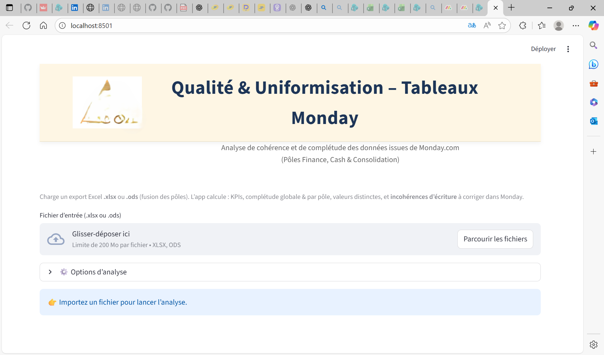
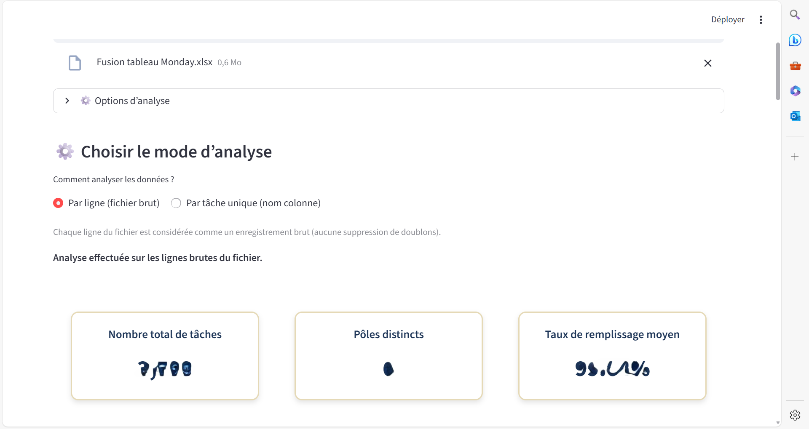
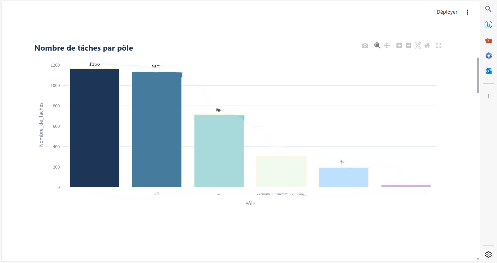
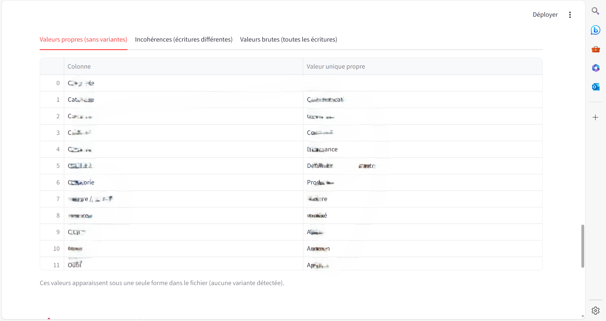
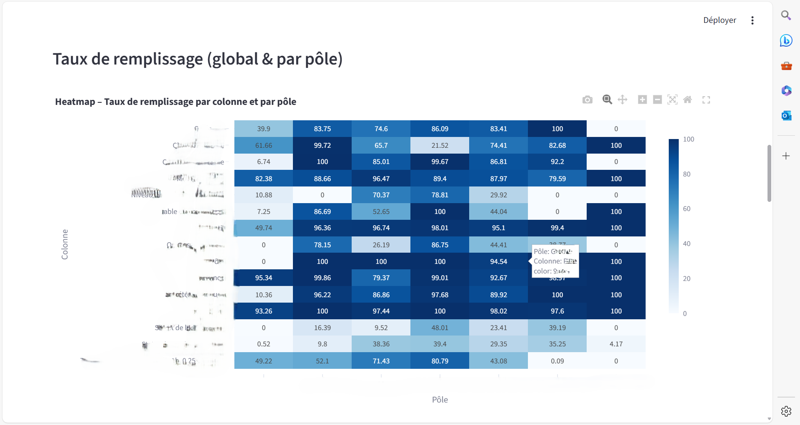
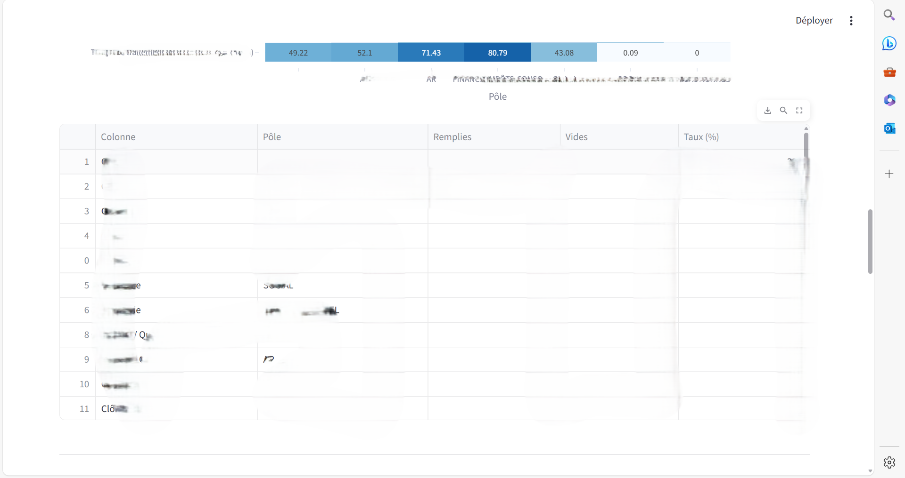
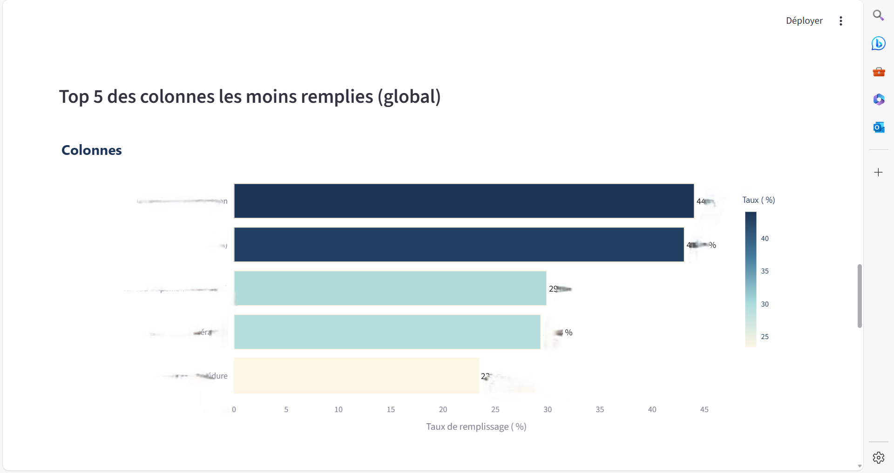

Application – Qualité & Uniformisation des Données Monday

🎯 Objectif :
Développer une application interne permettant d’évaluer la cohérence,
la completude, et l’uniformisation des tableaux Monday.com
utilisés par les pôles Finance, Cash et Consolidation.
🚀 Particularité :
L'application fusionne des exports Excel provenant de plusieurs pôles, analyse leur
alignement, calcule des KPIs de complétude, identifie les incohérences d’écriture
(variants, majuscules/minuscules, doublons) et génère des tableaux de contrôle qualité.
Interface construite sous Streamlit, pensée pour un usage métier réel.
📊 Indicateurs & Analyses générées :
- Nombre total de tâches
- Nombre de pôles distincts
- Taux de complétude global
- Taux de complétude par pôle
- Nombre de valeurs distinctes / incohérentes
- Heatmap de complétude par colonne × pôle
- Graphiques de volumétrie (créations, modifications…)
- Top colonnes à corriger
- Tableau “valeurs propres / incohérences” par colonne
🛠 Outils & Technologies :
Python (Pandas, NumPy), Streamlit, Altair, Excel (.xlsx / .ods), Data Quality,
détection d'incohérences, regroupement des valeurs, KPI automatiques.
🔒 IMPORTANT :
L'application ne contient aucune donnée sensible. Le code est consultable librement sur GitHub.
📸 Aperçu de l'application





